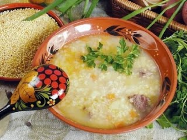

Козацький куліш — це густа, насичена і дуже смачна юшка, приготовлена з пшона, сала та картоплі. Ці інгредієнти є основними і в принципі достатніми для приготування цієї страви. Запорізькі козаки, які придумали куліш, варили його, як правило, на багатті. Від цього блюдо ставало ще смачніше і насичувалося ароматом диму. Якщо у вас є така можливість, то обов'язково спробуйте приготувати куліш на багатті, де-небудь на дачі або просто на природі. Ну а поки спробуйте приготувати не менш смачний козацький куліш в домашніх умовах.
Для початку переберіть пшоно, потім пересипте в миску і ретельно промийте його у великій кількості холодної води, а потім теплою. При стіканні вода в результаті повинна бути прозорою. Після чого процідіть промите пшоно на сито, щоб стекла вода, що залишилася. Обсушіть його. Потім залийте в каструлю питну воду і доведіть її на великому вогні до кипіння. Після цього всипте пшоно в киплячу воду, додайте трохи солі і ще раз доведіть до кипіння. Потім варіть пшоно на середньому вогні, близько 10 хвилин. Тим часом візьміть картоплю, добре промийте і зніміть з неї шкірку. На обробній дошці розріжте картоплю великими або середніми кубиками, як вам більше подобається. Додайте їх в каструлю з пшоном і варіть приблизно 15 хвилин, так, щоб картопля була майже готова.
Візьміть сало, наріжте на невеликі шматочки. Потім очистіть ріпчасту цибулю від лушпиння і добре промийте його під струменем холодної води, наріжте на маленькі шматочки. Поставте сковороду на вогонь і трохи підігрійте її, потім покладіть в неї сало і злегка розтопіть його на середньому вогні, потім додайте подрібнену ріпчасту цибулю. Обсмажуйте до золотистого кольору, близько 10 хвилин, регулярно помішуйте сало і цибулю на сковороді дерев'яною лопаткою.
Коли картопля буде майже готова, можна додати обсмажену цибулю і сало. На невеликому вогні готуйте куліш ще близько 5-7 хвилин. Додайте солі і спеції за смаком перед самим кінцем приготування. Коли козацький куліш буде готовий, накрийте каструлю кришкою, зніміть з вогню і дайте настоятися. При подачі страви посипте його дрібно подрібненою петрушкою. Козацький куліш готовий, можете приступати до вкушання аромату і чудового смаку цієї страви! Приємного Вам апетиту!